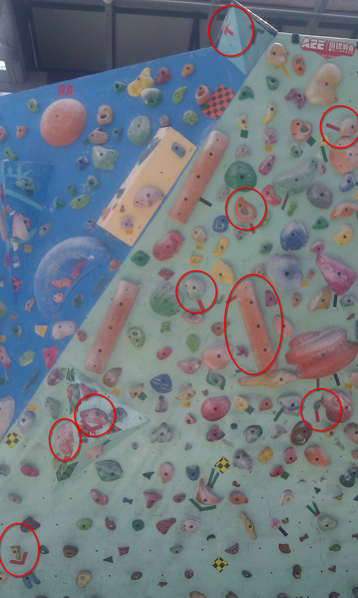

[转寄/推荐][转贴][删除][修改][设置可RE属性][上一篇][返回讨论区][下一篇][回文章][同主题列表][同主题阅读][从这里展开]
发信人: RockClimbing (爱攀岩~), 信区: outdoor
标 题: 9A的三条V4线
发信站: 饮水思源 (2014年04月10日00:14:10 星期四)
应某怂要求发上来，有兴趣的一起看看~~~
总体感觉偏简单，略暴力，思路都很清楚。
第一条被我flash了，点即红圈所示，个人觉得，难点在挂脚。
 screen.width - 200){this.width = screen.width - 200}">
|
[转寄/推荐][转贴][删除][修改][设置可RE属性][上一篇][返回讨论区][下一篇][回文章][同主题列表][同主题阅读][从这里展开]